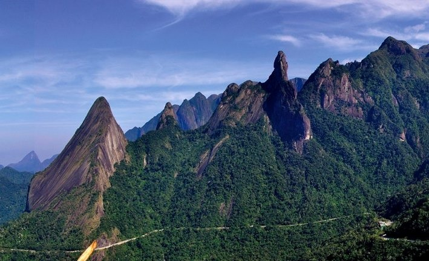
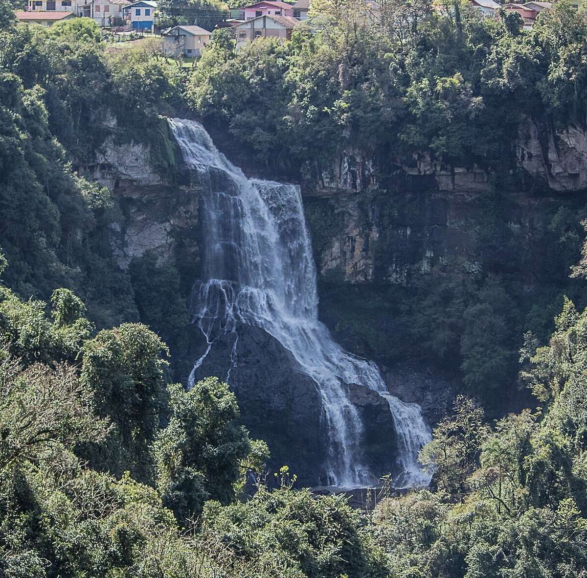
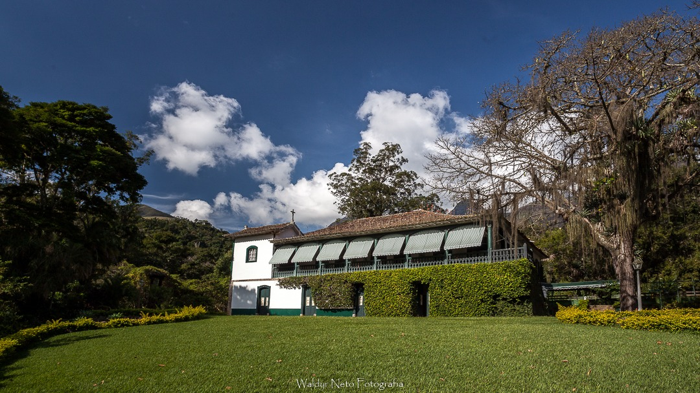

Área Oeste - Belezas Naturais
Explore as maravilhas naturais da região oeste de Petrópolis

Parque Nacional da Serra dos Órgãos
Um dos melhores locais do país para a prática de esportes de montanha, como escalada, caminhada e rapel.
Horário: Diariamente, 8h às 17h
Ingressos: R$ 15,00 (inteira)
Endereço: Estrada do Bonfim, Km 17 - Corrêas
Dificuldade: Variada (de leve a difícil)
Mais informações
Cascata do Véu da Noiva
Queda d'água com aproximadamente 40 metros de altura, formada pelo Rio Santo Antônio.
Horário: Diariamente, 8h às 17h
Ingressos: Gratuito
Endereço: Estrada União e Indústria, km 82 - Posse
Dificuldade: Fácil (10min de caminhada)
Mais informações
Fazenda Samambaia
Antiga fazenda que pertenceu ao escritor Monteiro Lobato, com belíssima arquitetura e paisagens.
Horário: Sábado e Domingo, 10h às 16h
Ingressos: R$ 20,00 (inteira)
Endereço: Estrada Philuvio Cerqueira Rodrigues, 5000 - Samambaia
Mapa da Área Oeste
Dicas para sua Visita
-
☀️
Melhor Época
De abril a outubro, quando o clima é mais seco e as trilhas estão mais acessíveis.
-
🎒
O Que Levar
Tênis confortável, protetor solar, água e lanches leves para as caminhadas.
-
🚌
Como Chegar
Ônibus turísticos partem do Centro ou você pode alugar um carro para mais liberdade.